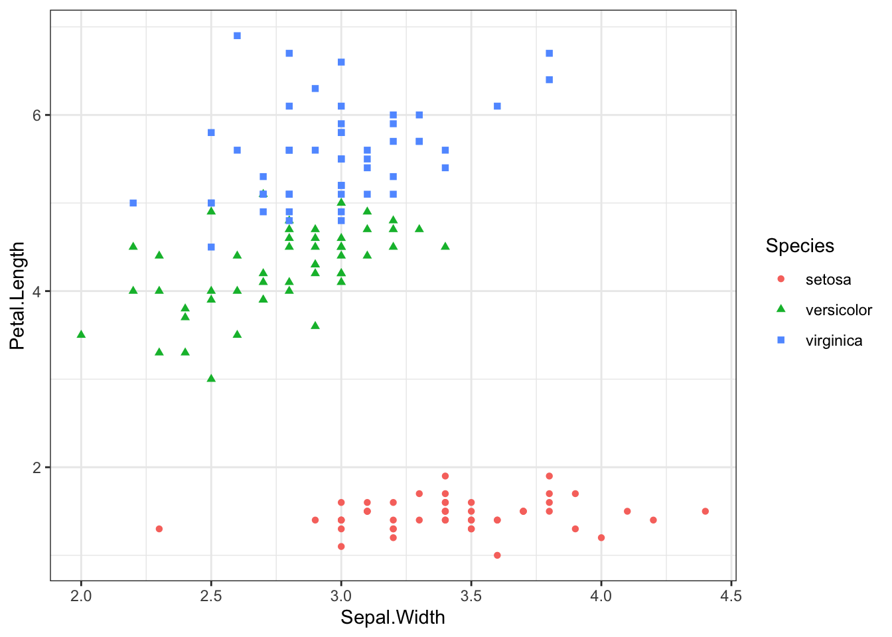
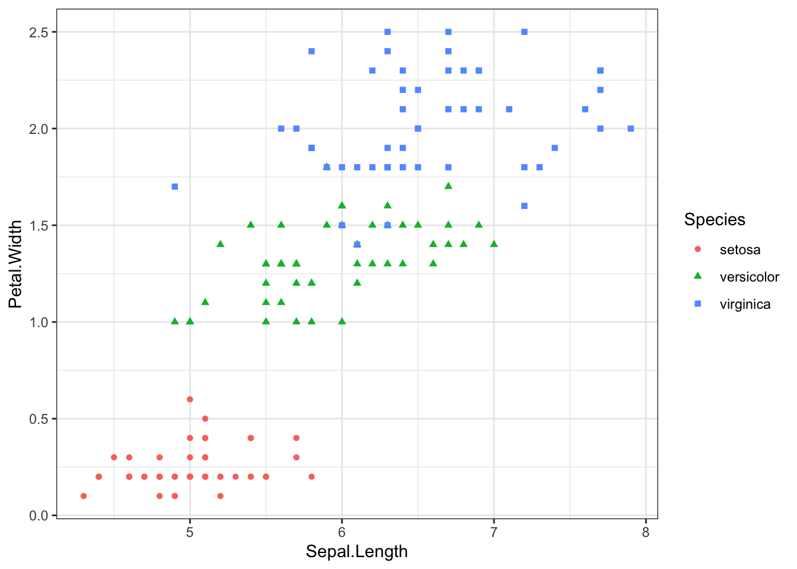
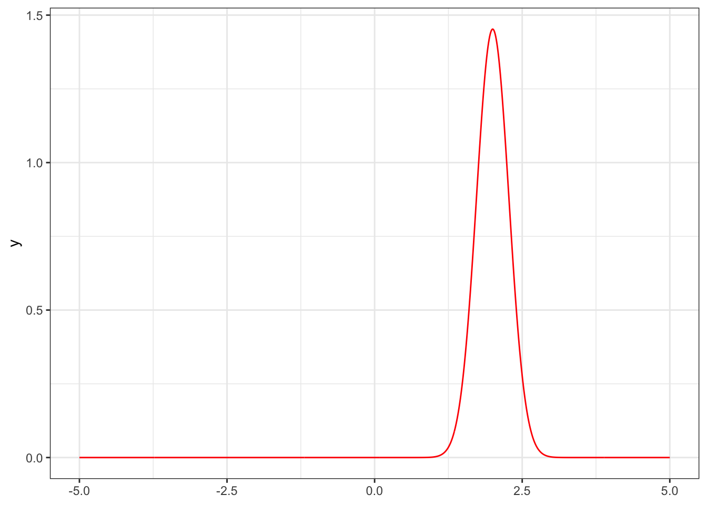

NBPclassify is a package for classification, when the data source has outliers, incorrect entries and/or missing data. I made this package for situations where the data is far from perfect but the decision making based on the classification is important.
From ?NBP_classify: NBP is Naive Bayes with p-values/exceedance probabilities, unlike the standard Naive Bayes which uses relative probability densities.
devtools::install_github("haakonbakkagit/NBPclassify")See also https://github.com/haakonbakkagit/NBPclassify
See also Btopic137 for another example with this package.
This is an illustration of how the method works. We are not trying to prove that this is the “Best model ever”. Instead, we have picked the case for which this model was designed to succeed, to illustrate what it does well.
library(NBPclassify)
library(ggplot2)
theme_set(theme_bw())
library(randomForest)The dataset we use is the iris data, but we introuce an error into the dataset first. If you want to analyse the original iris data you can remove the code introducing the error.
data(iris)head(iris)## Sepal.Length Sepal.Width Petal.Length Petal.Width Species
## 1 5.1 3.5 1.4 0.2 setosa
## 2 4.9 3.0 1.4 0.2 setosa
## 3 4.7 3.2 1.3 0.2 setosa
## 4 4.6 3.1 1.5 0.2 setosa
## 5 5.0 3.6 1.4 0.2 setosa
## 6 5.4 3.9 1.7 0.4 setosascatter <- ggplot(data=iris, aes(x = Sepal.Width , y = Petal.Length))
scatter + geom_point(aes(color=Species, shape=Species))
scatter <- ggplot(data=iris, aes(x = Sepal.Length, y = Petal.Width))
scatter + geom_point(aes(color=Species, shape=Species))
Say we want to predict the red point with a Petal.With value of 0.6. But assume that this had one error in the recordings, as follows.
## We will predict nr 44
iris[44, , drop=F]## Sepal.Length Sepal.Width Petal.Length Petal.Width Species
## 44 5 3.5 1.6 0.6 setosa## Make prediction hard by introducing an error
iris$Petal.Width[44] = 1.5
## We will predict nr 44
iris[44, , drop=F]## Sepal.Length Sepal.Width Petal.Length Petal.Width Species
## 44 5 3.5 1.6 1.5 setosaThis erroneous value is still well within the values in the dataset, and would usually not be removed during data cleaning.
## Prediction target
prediction.cov = iris[44, -5, drop=F]
print(prediction.cov)## Sepal.Length Sepal.Width Petal.Length Petal.Width
## 44 5 3.5 1.6 1.5## Training data
training.cov = iris[-44, -5]
training.class = iris$Species[-44]## See: https://rpubs.com/Jay2548/519589
fit.rf = randomForest(Species ~., data = iris[-44, ],
importance = T)
predict(fit.rf, newdata = prediction.cov)## 44
## setosa
## Levels: setosa versicolor virginicalibrary(e1071)##
## Attaching package: 'e1071'## The following object is masked from 'package:gtools':
##
## permutations## We get the wrong prediction
fit.nb=naiveBayes(Species~., iris[-44, ])
pred.nb.1=predict(fit.nb, prediction.cov)
pred.nb.1## [1] versicolor
## Levels: setosa versicolor virginica## But if we set the broken data to NA it works:
temp = prediction.cov
temp$Petal.Width = NA
pred.nb.2=predict(fit.nb, temp)## Warning in predict.naiveBayes(fit.nb, temp): Type mismatch between
## training and new data for variable 'Petal.Width'. Did you use factors
## with numeric labels for training, and numeric values for new data?pred.nb.2## [1] setosa
## Levels: setosa versicolor virginica## Fit and predict:
nbp = NBP_classify(training.cov, training.class, prediction.cov)
nbp## row_names nbp_class covariate p_val logdens
## 1 44 setosa Sepal.Length 1.0e+00 0.1135
## 1.1 44 setosa Sepal.Width 7.9e-01 0.0071
## 1.2 44 setosa Petal.Length 5.7e-01 0.6634
## 1.3 44 setosa Petal.Width 0.0e+00 -95.9687
## 11 44 versicolor Sepal.Length 8.1e-02 -1.7777
## 1.11 44 versicolor Sepal.Width 2.6e-02 -2.2480
## 1.21 44 versicolor Petal.Length 4.9e-09 -17.2877
## 1.31 44 versicolor Petal.Width 3.1e-01 0.1904
## 12 44 virginica Sepal.Length 1.8e-02 -3.2485
## 1.12 44 virginica Sepal.Width 1.2e-01 -0.9892
## 1.22 44 virginica Petal.Length 8.2e-13 -25.9370
## 1.32 44 virginica Petal.Width 6.9e-02 -1.2838Aggregate prediction
pagg = NBP_aggregate_p_values(nbp$p_val, by=nbp[, c("row_names","nbp_class"), drop=F])
pagg## row_names nbp_class p_val
## 1 44 setosa 7.3e-03
## 2 44 versicolor 4.0e-05
## 3 44 virginica 1.2e-05pagg$nbp_class[which.max(pagg$p_val)]## [1] "setosa"W is the discrete point prediction vector, with a 0 or 1 for each category. If the model does not know which category the prediction belongs to this is represented as several 1’s in this vector.
NBP_pred_categories(pagg)## row_names nbp_class p_val
## 1 44 setosa 1
## 2 44 versicolor 0
## 3 44 virginica 0Future update: TODO: Show how to compute NB with the package. To get the same results as the NB code above.
There is a hidden feature of the package that allows you to extract the “Naive Bayes” density functions. This is convenient for plotting.
## Test keep
ptab2 = NBP_classify(training.cov, training.class, prediction.cov, keep = T)
flist = attr(ptab2, "flist")
fun1 = flist[[1]][[1]]
ggplot() + xlim(-5, 5) + theme_bw() +
geom_function(fun = fun1, colour = "red", n=1001)